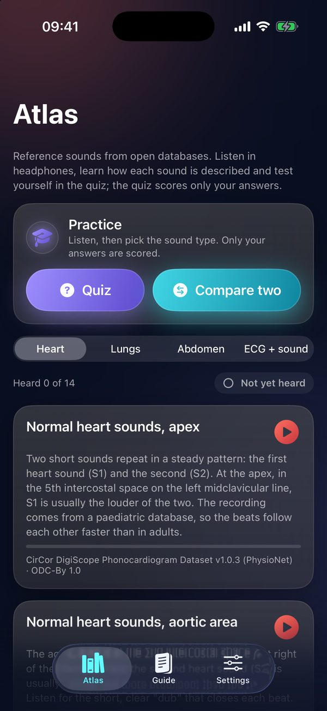
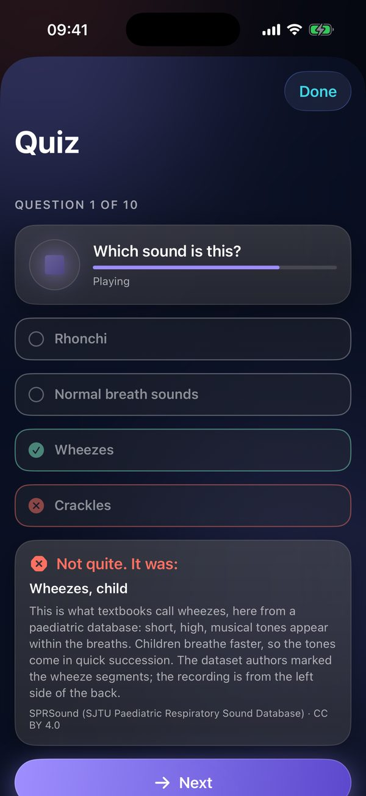
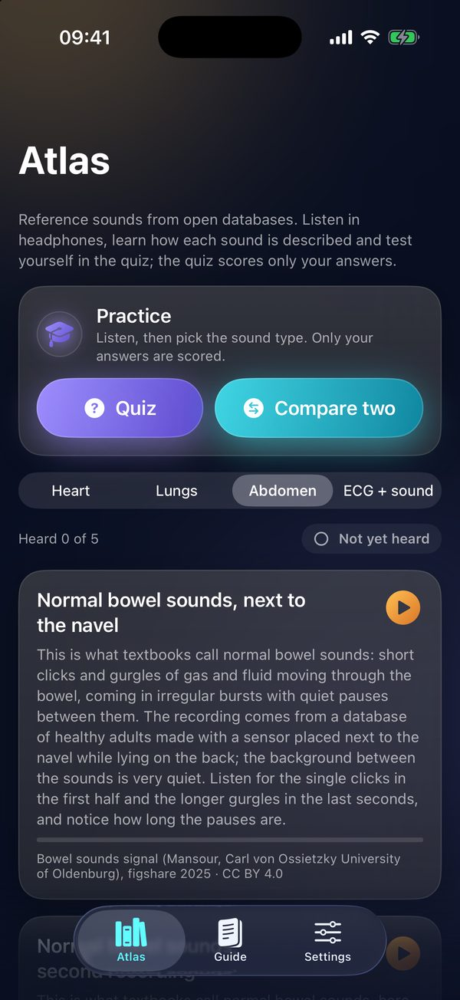
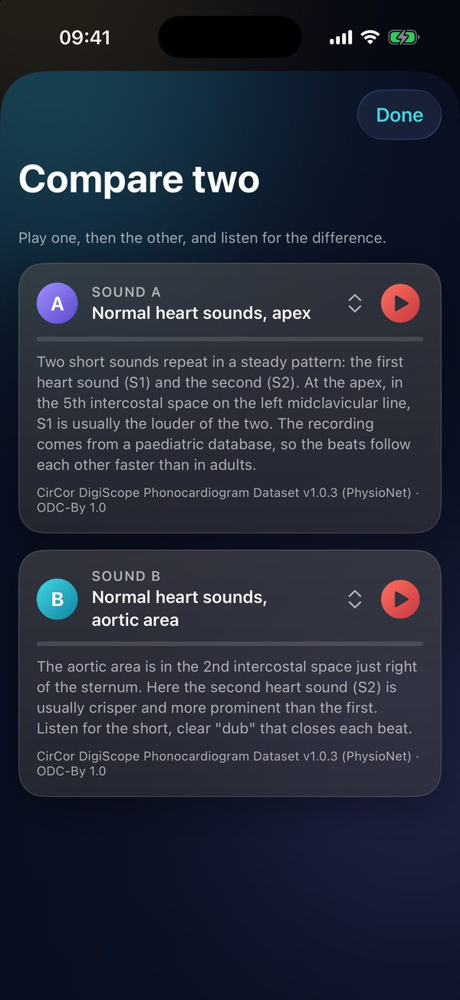
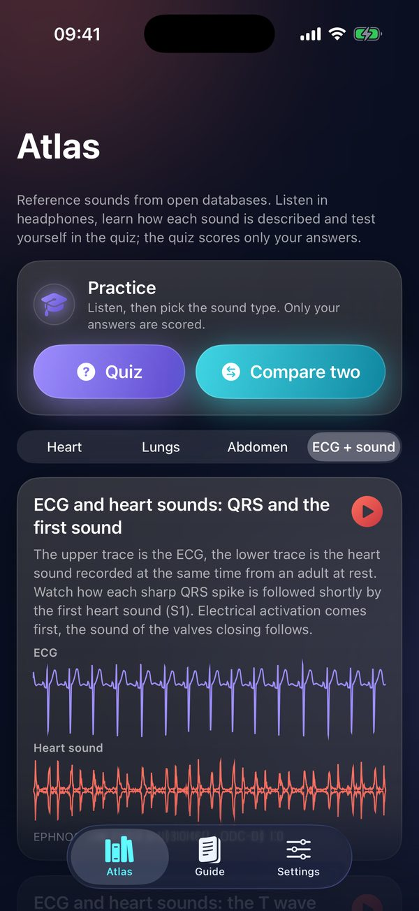
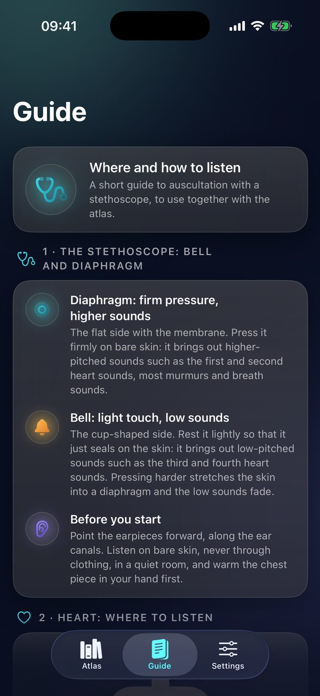

Learn auscultation
by ear.
Ausculta is an educational atlas for learning auscultation. It contains 35 textbook heart, lung and bowel sounds from open research databases, each with a description, source and licence, and 4 ECG examples with heart sound. You practise with a quiz and by comparing two sounds side by side, and the guide reminds you where and how to listen with a stethoscope. The app does not use the microphone and measures nothing. Free to download.


Auscultation is learned with your ears. First you listen to an example with its description, then you recognise it without one, and finally you tell it apart from a similar one. Ausculta plays the examples in your headphones whenever and as often as you need. And then… …in hands-on teaching with a stethoscope you already know what to listen for.
A skill that is slipping out of training
Auscultation remains the first choice at the bedside and in the field: it is cheap, immediate and available even where there is no echocardiography. Mastering it, however, takes many repetitions, and chances to listen at the bedside are getting fewer. Ausculta helps you train your ear: an atlas of textbook examples from open databases that you can play again and again, and a quiz that shows what you already recognise.
Recognition is poor and barely improves with years of training
Mangione and Nieman tested 453 physicians in training and 88 medical students on 12 cardiac findings recorded from patients: internal medicine and family practice residents recognised on average 20 % of them, with little change by year of training. In a second study (656 physicians in training and 194 medical students), residents recognised on average fewer than half of 10 lung findings, again with little improvement during training. A later test of 860 participants showed that cardiac examination skills do not improve after the third year of the four-year US medical course, not even in residents and practising physicians; only cardiology fellows did better.
Repetition works
Barrett and colleagues had 51 second-year medical students listen to each of four basic murmurs 500 times: accuracy rose from 13.5 % to 85 % (monitored) and from 20.9 % to 86.1 % (unmonitored); the control group did not improve significantly (24 % to 32 %). Auscultation is in part a technical skill learned by repetition. Ausculta is built for that kind of repetition: an atlas you can play a hundred times and a quiz that shows what you already recognise without the description.
The trend points down
At one US academic centre, the scores of students and physicians in training in a cardiac auscultation simulation test fell between 2008 and 2018 by 0.15 points a year (a 16-sound test, mean 7.7 points; 411 tests, 85 % of them medical students). Echocardiography has not replaced auscultation, it has complemented it: the ear at the bedside often helps decide who to refer, and when.
Sources: Mangione S, Nieman LZ. JAMA. 1997;278(9):717-722 (PMID 9286830). Mangione S, Nieman LZ. Am J Respir Crit Care Med. 1999;159(4):1119-1124 (doi:10.1164/ajrccm.159.4.9806083). Vukanovic-Criley JM et al. Arch Intern Med. 2006;166(6):610-616 (doi:10.1001/archinte.166.6.610). Barrett MJ et al. Chest. 2004;126(2):470-475 (doi:10.1378/chest.126.2.470). Zhang NS et al. Am Heart J. 2025 (doi:10.1016/j.ahj.2025.03.006). Verified in PubMed on 24 October 2026.
How to learn with the atlas
The atlas is built on repetition: listen, read the description, test yourself and come back to what has not clicked yet.
Listen with the description
Listen to each example several times in headphones with the description open, until you can recognise it without reading. Headphones bring out quiet sounds too, such as a third heart sound or fine crackles; the examples also play through the speaker.
Test yourself in the quiz
The quiz plays an example and you pick the type of sound from up to four names. You see right away whether you were right, along with the textbook description. Only your answers are scored.
Compare two examples
Compare two plays two examples side by side, for example normal breathing and wheezes, or fine and coarse crackles. Play one, then the other, and notice what sets them apart.
Come back to the examples
The “Heard X of Y” overview shows how many examples in a section you have heard, and the “Not yet heard” filter picks the ones you are missing. Come back to the examples after a few days: in auscultation, repetition is what works.




What Ausculta offers
Atlas of reference sounds
35 textbook heart, lung and bowel sounds from open research databases (PhysioNet and others; one bowel sound example comes from the freesound.org sound library). Each has a description, source and licence. They play in headphones or through the speaker.
Heart, lungs and abdomen
Normal heart sounds from different listening sites, systolic and diastolic murmurs, third and fourth heart sounds; vesicular and tracheal breathing, wheezes, rhonchi, crackles and stridor; normal bowel sounds and borborygmi. The description explains what you hear in each example.
Quiz and comparison
The quiz plays an example and you pick the type of sound; the textbook description follows right away. Only your answers are scored. Compare two plays two examples side by side, and the app remembers which examples you have already heard.
ECG and heart sound
4 examples from an open database in which the ECG and the heart sound were recorded together. You see them one above the other on one time axis and, during playback, follow how the heart sounds come after the electrical activation. Nothing is measured in the examples.
Stethoscope guide
Where and how to listen with a conventional stethoscope: bell and diaphragm, pressure, auscultation sites of the heart and lungs, the four abdominal quadrants and how long to listen. As background for the atlas.
Privacy
The app does not use the microphone, has no account, server or analytics and collects no data. Purchases are handled by the App Store.
Free and Ausculta Pro
Ausculta is a free download. Ausculta Pro is a one-time in-app purchase, not a subscription.
Free
12 of the 35 atlas sounds, the quiz and Compare two with the free examples, all 4 ECG examples with heart sound, the overview of examples you have heard and the whole guide.
Ausculta Pro
Unlocks the other 23 atlas sounds, which then also appear in the quiz and in Compare two. One-time purchase; the App Store shows the price in your local currency.
A voluntary contribution to development and maintenance (Support development) unlocks nothing. If you wish, it supports further work on Ausculta.
Who is behind it
MUDr. Ján Šikuta, PhD.
Author of the idea and the teaching concept: atlas, quiz and guide.
Breathune
Design and development of the app, preparation of the atlas sounds.
Who it is for
For medical and nursing students and for the curious who want to learn to listen.
Collaboration on teaching auscultation or choosing the examples: admin@breathune.eu